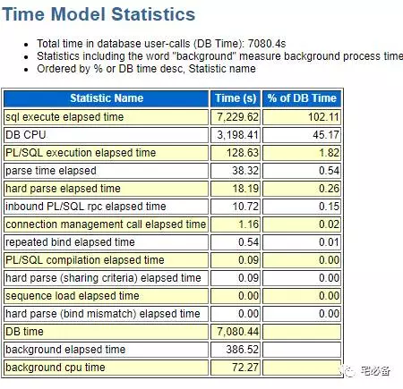
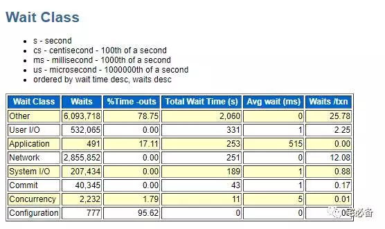
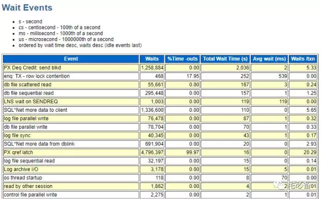
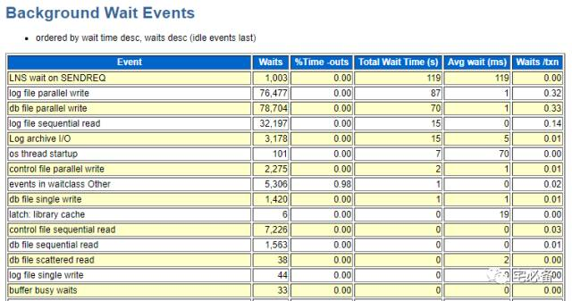
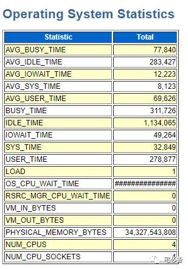
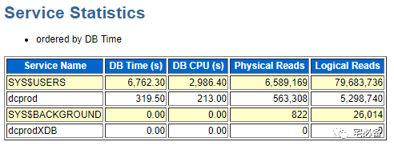
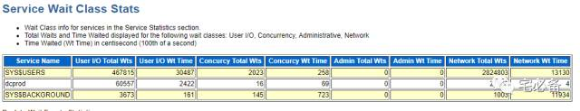

Wait Events Statistics
原创 2017-08-29 Oracle 宅必备
上节我们讲述了一些常见等待事件以及处理方法，这节讲述等待事件在awr报告中的整体情况
Time Model Statistics

- Statistic Name 表示状态的名称
- Time (s) 表示在awr报告时间内持续的时间
- % of DB Time 表示和DB Time相比其占用的比例
这个部分根据时间模型来分类
首先我们介绍几个概念
DB Time=DB CPU+Non-Idle Wait Time
Oracle进程(服务器，前台，影子等)的运行需要消耗CPU时间，我们把这些时间成为DB CPU ，注意后台进程的消耗不包括在DB Time中
如果一个进程不消耗CPU资源，它就会处于等待状态
等待包含空闲等待和非空闲等待，非空闲等待(顺序读,离散读,log sync,锁,闩等)所消耗的时间我们称为Non-Idle Wait Time
-
sql execute elapsed time 表示执行SQL语句语句所用的时间，102%说明大部分DB Time都在执行SQL语句，这是非常好的，说明DB Time没有浪费在其他动作上，如解析。
-
DB CPU 如上面所说表示消耗CPU的时间
-
parse time elapsed表示解析所占用的时间
-
hard parse elapsed time表示硬解析所占用的时间
-
DB time = DB CPU+Non-Idle Wait Time
-
background elapsed time 表示后台进程持续的时间
-
background cpu time表示后台进程的CPU时间
如何计算Non-Idle Wait Time
Non-Idle Wait Time=DB Time-DB CPU
通过上面公式我们可以计算非空闲等待时间的时间
回到上图，Non-Idle Wait Time=7080-3198=3882,说明非空闲等待占到了总DB Time的一半以上，这时我们需要找出是什么等待造成的
80/20原则
这个原则告诉我们80%的等待是由20%的事件造成的，我们需要集中精力解决排行前几的事件
Wait Class

这部分是根据等待的类型来排序等待事件
从上图可以看到 等待类型为Other 的等待事件占了非空闲等待的26%，其次是User I/O
Wait Events
 这部分以具体的等待事件名称来进行排序，让我们可以清晰的知道是什么等待事件占的比例高
Background Wait Events

这部分是以后台进程的等待事件来进行排序的，让我们知道后台等待事件哪些占用的比例高
Operating System Statistics

该部分说明的是OS层面的一些状态信息,如CPU,IO
- CPU使用率=BUSY_TIME/(BUSY_TIME+IDLE_TIME)=20%
- BUSY_TIME=SYS_TIME+USER_TIME
Service Statistics

这部分是根据服务名称来所消耗的DB Time进行排序的
SYS$USERS指的是用户连接是没有制定服务名称时默认的服务名
Service Wait Class Stats

这部分是将上一部分的DB Time细分后展现
好了，到这里我们将awr报告中Wait Events Statistics部分全部分析完成，通过这一节，我们知道了：
-
DB Time是如何计算的
-
如果计算非空闲等待事件的值
-
如果查找数据库中哪些等待时间最严重